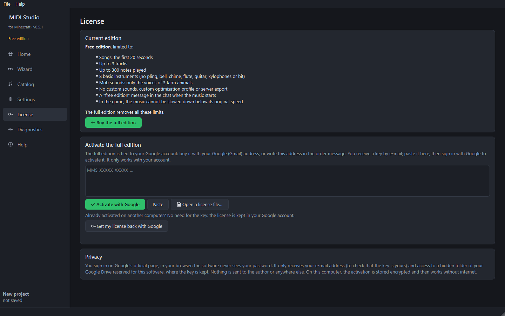
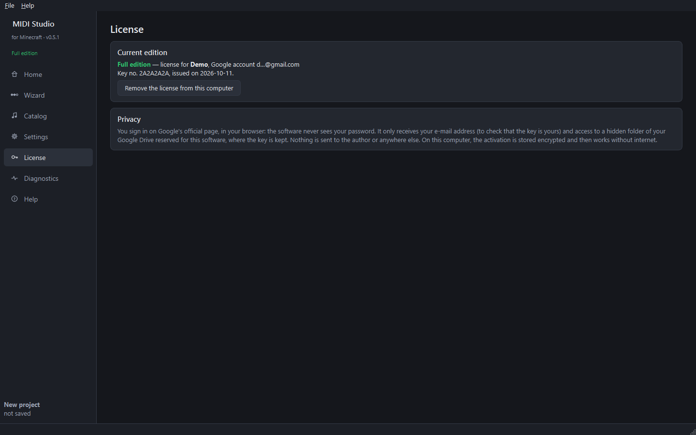

Step 12 — Free and full editions, license
Free edition
Without a license the software is the free edition. Everything works, within these limits:

- Songs: the first 20 seconds.
- Up to 3 tracks and 300 notes played.
- 8 basic instruments (no pling, bell, chime, flute, guitar, xylophones or bit).
- Mob sounds: only the voices of 3 farm animals.
- No custom sounds, custom optimisation profile or server export.
- A short “free edition” message in the chat when the music starts.
- In the game, the music cannot be slowed down below its original speed.
Buying the full edition
The full edition is tied to your Google account. A key only works with the account it was bought for: even copied, it is useless to anyone else.
- Click Buy the full edition (License page): you are taken to the shop.
- Pay with your Google (Gmail) address, or write it in the order message if you pay with another address.
- You receive a license key by e-mail. It starts with
MMS-.
Activating the key
- Open the License page and paste the whole key.
- Click Activate with Google. The software checks the key, then your browser opens Google's official sign-in page.
- Sign in with the Google account shown, then accept. The page says “Signed in”: go back to the software.

The full edition is unlocked immediately, without restarting. Afterwards the software works without internet on this computer.
Changing computer
The key is kept in a hidden folder of your Google Drive reserved for the software (it does not appear among your files). On another computer, on the License page, click Get my license back with Google and sign in: that's all, no key needed.
Remove the license from this computer removes the activation from this computer only; the license stays in your Google account.
Privacy
- You sign in on Google's page, in your browser: the software never sees your password.
- It only receives your e-mail address (to check that the key is yours) and access to the software's hidden folder in your Google Drive, where the key is kept. It cannot see your other files.
- Nothing is sent to the author or anywhere else. On the computer, the activation is stored encrypted.
Details: Privacy page of the website.
Next guide: playing on a server.